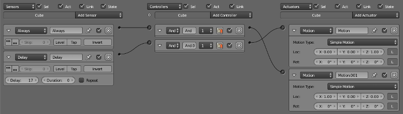
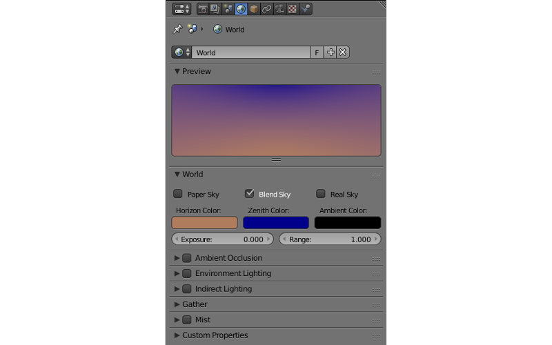
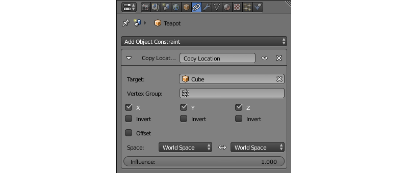
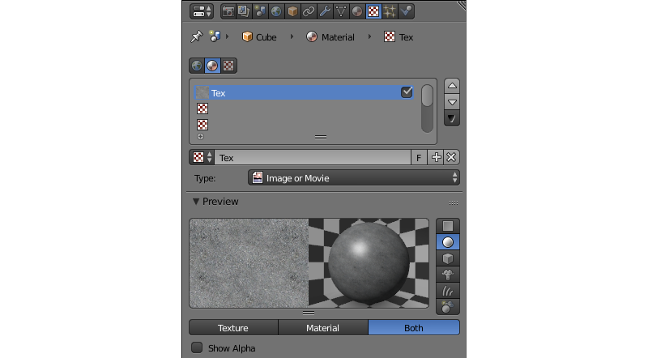
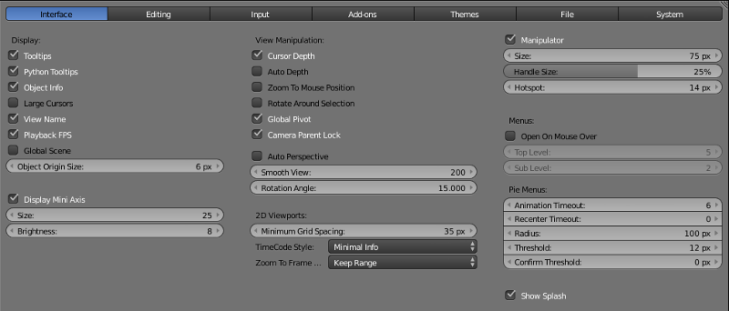
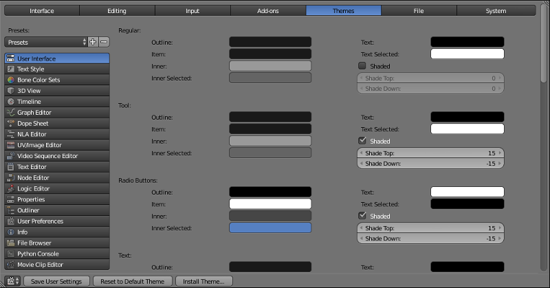
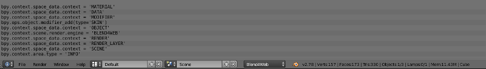

Blender是一个免费的开源3D创建套件，支持从物体建模到纹理，索引和动画到渲染，合成甚至视频编辑的整个3D工作流。 Blender也可用于创建交互式应用程序，包括基于Web的应用程序。
Blender是一种跨平台的软件，可以在Windows，Linux和macOS平台上运行。
Blender界面由几个窗口组成。屏幕上存在的窗口的数量和类型不是严格定义的，可以由用户手动更改，也可以从屏幕顶部的“Screen Layout”菜单中选择一个预设。

程序的主窗口，显示当前加载的3D场景（通过相机或其他方式）。组合任何3D场景的3D物体在此窗口中创建，编辑和动画。
此窗口默认打开。

该窗口（通常位于屏幕底部）显示关于动画的各种数据。这包括当前帧，总帧数（即当前场景中的动画长度）和所选物体的关键帧。关键帧本身也在此窗口中创建。
此窗口默认打开。

一种工具，修改各方面使用f-curves的物体动画。图形编辑器在blend4web中和在Blender中一样使用。

用于管理关键帧的工具。动画板可以与Blender4Web一样在Blender中使用。

编辑非线性动画的工具。Blend4Web 引擎支持 NLAs;用户手册在 相应章节 。

此工具可用于编辑物体的 UV 贴图和各种 2D 的资产，如纹理图像。
UV 贴图以相同方式用于 Blend4Web。

可以编辑视频序列的界面。这是一个正式的视频编辑系统，可以用于修剪视频文件，将效果应用于它们，将它们组合成一段视频。它不用在 Blend4Web 引擎中。

进行影片剪辑的工具。它通常用于运动跟踪和遮罩的电影。它不用在 Blend4Web 引擎中。

Blender里的一个简单的文本编辑器。它支持自动换行、 语法突出显示、 行号、 查找和替换功能和一些其他功能。
文本编辑器是不对 Blend4Web 项目对文件进行编辑的， 因为 项目管理器 具有其自身的内置 编辑器 对项目文件进行编辑。然而，文本文件在文本编辑器中创建 （或导入到使用它的 .blend 文件） 可以在 Blend4Web 作描述来源 元标签 。

用于创建基于节点的材质，纹理和后期处理效果的界面。在 Blend4Web 引擎中支持 材质节点 ，而不支持纹理和合成节点。Blend4Web 还具有另一种类型的节点的创建 场景逻辑节点.

用于编辑Blender游戏引擎中使用的逻辑块的工具。
注解
Blend4Web 引擎不使用Blender逻辑编辑器。相反，它具有相似，但独立的工具进行编辑场景逻辑 逻辑编辑器.

第二个主窗口的程序。包含各种设置，一些只关注当前选定的物体，另外的适用于整个场景。
此窗口通常位于3D视图窗口的右侧。
属性窗口包含几个选项卡。这些选项卡保留了一组特定的参数。选项卡如下：
渲染

此选项卡包含有关渲染的选项。
在 Blend4Web 模式下，渲染选项卡功能选项组略有不同描述在 这里.
渲染层

此选项卡可以用于渲染后的图像分成几个"图层"（如漫反射颜色、 阴影、 法线贴图等），可以比用于在Blender或其他软件的合成。在 Blend4Web 引擎中不使用此选项卡。
场景

包含作为整体的 3D 场景的各种参数。
此选项卡在 Blend4Web 中支持，但有一组不同的选项描述 这里 更详细。
世界

控制场景环境的设置可以在此选项卡中找到。这包括背景颜色、 环境照明、 雾等等参数。
此选项卡也是用的 Blend4Web 引擎设置环境。这些设置本身有点区别于Blender。 这里 介绍了差异 。
物体

此选项卡包含各种物体设置，如名称、 位置、 组等等。物体参数广泛应用于 Blend4Web 引擎中描述在本手册 相应章节 。
约束

使用约束以各种方式限制物体的运动，或将其设置沿着一定的路径。 3D 艺术家常利用约束简化创建复杂动画的过程，使它更方便。此选项卡包含用于将约束添加到所选的物体，他们设置的工具，或删除它们，如果有必要。
约束选项卡可以在 Blend4Web 中使用。然而，现在引擎不支持某些在Blender中的物体的约束。请参见 相应章节 学会如何在 Blend4Web 中使用物体约束。
修改器

此列表包含附加到当前所选物体的所有修改器。在此选项卡上修改器可以添加、 配置和删除。
Blend4Web 引擎中支持修改器，但在默认情况导出时不应用于物体。您可以应用修改器通过 应用修改器 或应用缩放和修改器选项。
数据

此选项卡包含对物体的顶点组和颜色、 UV贴图、 形变键和其他类似的东西的信息。在 Blend4Web 中支持没有其他更多选项。
材质

可以在这里设置物体的材质 （或多个材质）。
Blend4Web 引擎和Blender在使用材质的方式上大致相同。 相应章节 中介绍了差异。
纹理

此选项卡用于设置纹理材质和环境相似。
同一选项卡用于设置在 Blend4Web 的纹理。 相应章节 阐述了如何使用纹理。
粒子

在这里，粒子系统创建和设置。
粒子在 Blend4Web 引擎被支持和可用于创建 流体 和 物体实例.
物理

所选物体的物理设置： 给一个物体它的包围等等相关的物理模型。 Blend4Web 引擎使用物理有 一整章 的内容。

包含所谓的场景图，将所有数据存在于.blend 文件都组织展示的树状结构。
默认情况下，此窗口位于Blender右上角的窗口。
此窗口包含各种Blender设置。这些设置可分为几个类别，每一项占有一个选项卡，位于窗口的顶部。选项卡如下：
界面

此选项卡包含各种调整程序界面的设置。
编辑

此选项卡允许您设置各种物体编辑工具如何与输入交互。
主题

此选项卡允许用户自定义Blender界面和配色方案，手动或通过选择的预先存在的界面主题之一。
文件

此选项卡用于配置blend文件，纹理，渲染的图像和其他文件的默认文件路径。自动保存首选项也是在这里设置。
此选项卡上的 脚本 字段用于安装 Blend4Web 引擎。安装过程在 相应章节 详尽的描述。
系統

各种系统设置，包括分辨率、渲染设备、 视区设置和界面语言。

主菜单栏的错误消息列表。这个窗口默认情况下是打开的，可以在屏幕顶部发现 （3D 视图窗口右上方）。

这是一个内置的文件管理器，可以用于各种文件相关的操作，主要是打开/保存.blend 文件和导入导出场景和资产。

这是一个为有经验的用户准备的工具。Python 控制台提供快速的方法来执行命令，完整的自动完成功能、 命令历史记录和对整个 Python API 的完全访问权限。

{kind=link}
{kind=link}
{kind=link}
{kind=link}
{kind=link}
{kind=link}
{kind=link}
{kind=link}